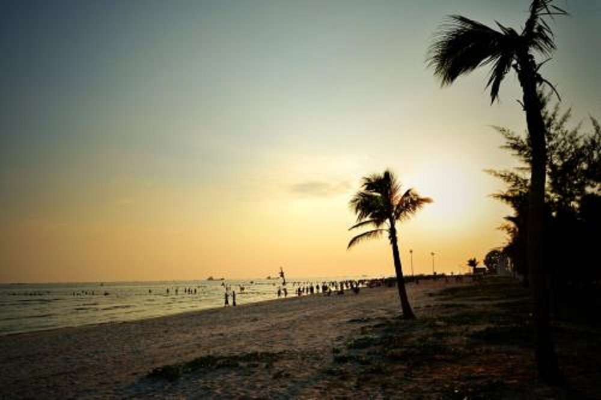
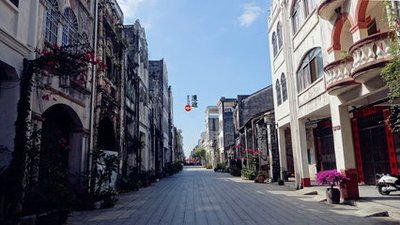
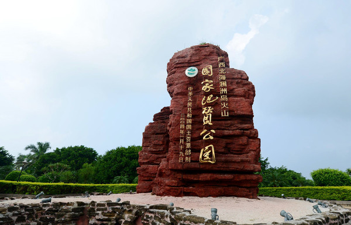
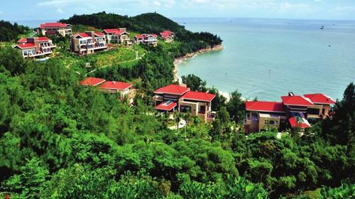

-
北海银滩北海银滩是北海市的著名的旅游景点，位于广西北海市银海区，西起冠头岭，东至大冠沙，由西区、东区和海域沙滩区组成，东西绵延约24公里，海滩宽度在30--3000米之间，陆地面积12平方公里，总面积约38平方公里。
-
北海老街北海老街——珠海路是一条有近二百年历史的老街，始建于1821年，初建时称为升平街，只有200米长，4米宽。随着各历史时期的不断发展，现已成为长1.44公里，宽9米，沿街全是中西合璧骑楼式建筑的老街。
-
涠洲岛 涠洲岛是火山喷发堆凝而成的岛屿，有海蚀、海积及溶岩等景观，有“蓬莱岛”之称，是中国地质年龄最年轻的火山岛，也是广西最大的海岛。
-
北海冠头岭北海冠头岭位于广西北海市西尽端，全长3公里，有如一青龙横卧海面，坡岭宛延起伏，状如窿冠因而得名。由主峰望楼岭（前清曾设“望楼”于顶巅，海拔120米）与风门岭、Y髻岭、天马岭等山峦群体组成，东北延伸至石步岭南麓而止，同向潜脉与石步岭地角岭相连。